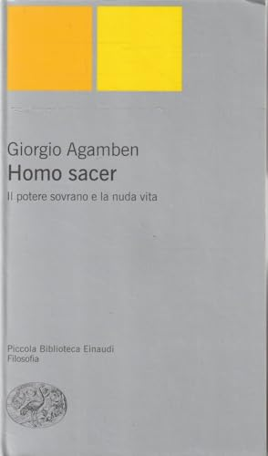
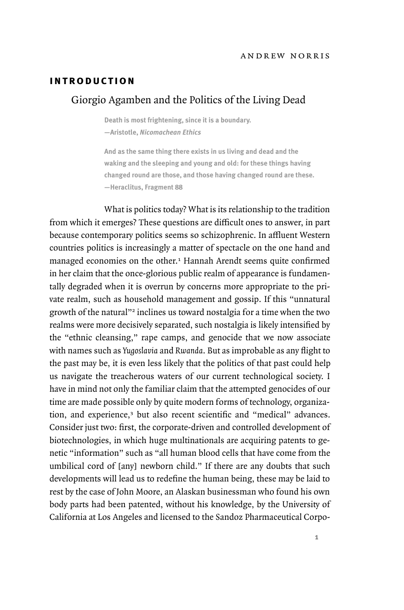
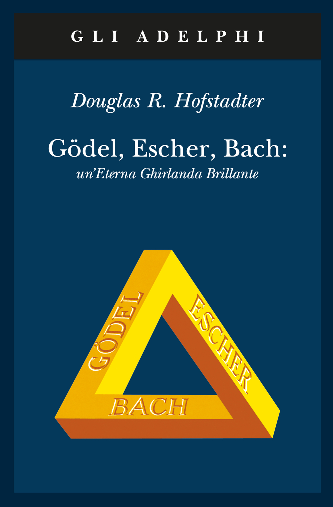
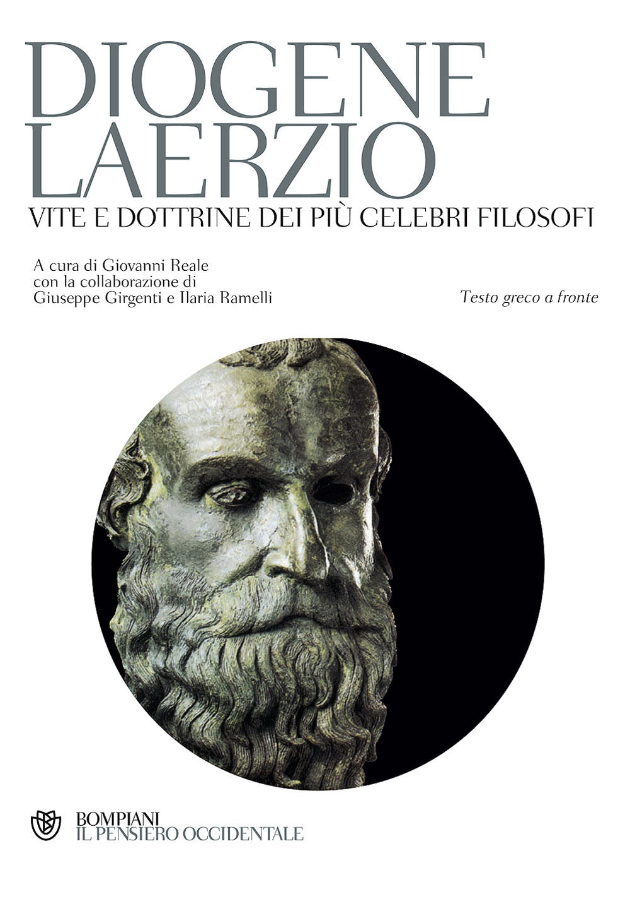

37:08 · 8 OPERE
Commento ad un articolo di Giorgio Agamben.
Il filo del discorso
Il relatore legge e discute ampi passaggi di La nuda vita e il vaccino di Giorgio Agamben. La critica non si limita al dissenso politico: contesta il passaggio da impressioni generali a conclusioni presentate come certe, la descrizione dell’umano come decisione storica e l’uso di concetti che richiederebbero una spiegazione più diretta. La nozione di nuda vita è collocata nel progetto Homo sacer e richiamata attraverso un saggio di Andrew Norris.
Leggi la sintesi completaRiduci la sintesi
Alla distinzione fra uomo e animale il relatore oppone una responsabilità verso ogni vivente, con riferimenti a Linneo, al buddhismo e al rapporto fra coscienza e vita comune. La discussione si sposta poi sul lessico greco: Aristotele, il logos, la coppia e l’aneddoto del bipede implume servono a mettere alla prova una separazione troppo rigida fra vita biologica e vita politica. Nella parte finale si torna al testo di Agamben, al contagiato asintomatico e alla metafora del certificato sanitario come nuova appartenenza civile. Il relatore ne condivide la preoccupazione per le libertà, ma chiede formulazioni e argomenti più espliciti. La scheda distingue queste interpretazioni dalle questioni cliniche: assenza di sintomi e assenza d’infezione non coincidono, e autorizzazione condizionata e sperimentazione senza valutazione sono condizioni diverse.
I libri nel discorso
La nuda vita e il vaccino
Note sul riferimento
Copertina della raccolta che contiene l’articolo: A che punto siamo?: Articolo online del 16 aprile 2021, Quodlibet, Una voce. Immagine della raccolta A che punto siamo? L’epidemia come politica, nuova edizione accresciuta, Quodlibet, 15 settembre 2021, 128 pagine: contiene il testo al numero 26.
Copertina bianca autentica della nuova edizione accresciuta 2021, acquisita dal catalogo IBS. È una raccolta di trenta interventi, non una copertina autonoma dell’articolo del 16 aprile. L’indice distingue La nuda vita, numero 9, da La nuda vita e il vaccino, numero 26. I passaggi commentati sono riconoscibili nella trascrizione del video; il confronto non copre integralmente l’articolo originale.
Articolo di Giorgio Agamben del 16 aprile commentato estesamente: titolo verificato La nuda vita e il vaccino.

Homo sacer. Il potere sovrano e la nuda vita
Note sul riferimento
Copertina: Einaudi, Piccola biblioteca Einaudi, nuova serie 305, ristampa 2005, VIII e 225 pagine. Prima edizione 1995 nella collana Einaudi contemporanea 38.
Copertina autentica grigia con due quadrati gialli, titolo completo e marchio Piccola Biblioteca Einaudi Filosofia: appartiene alla veste della ristampa PBE, non a Einaudi contemporanea 1995. La pagina commerciale la associa al vecchio ISBN 1995: l’associazione non viene ripetuta come prova dell’edizione. La ristampa 2005 e il suo ISBN sono verificati nel catalogo Braidense; l’esemplare del video non è certificato.
Homo sacer, Giorgio Agamben, 1995 espliciti.

Giorgio Agamben and the Politics of the Living Dead
Note sul riferimento
Prima pagina della versione in volume del saggio di Norris (2005): Saggio originale in Diacritics, 30, 4, inverno 2000, pagine 38–58, DOI 10.1353/dia.2000.0032. Immagine della pagina 1 della versione introduttiva in Politics, Metaphysics, and Death, Duke University Press, 2005, pagine 1–30.
Pagina intera dall’anteprima editoriale Duke: Andrew Norris, Introduction e titolo del saggio. È la pagina numerata 1, decima pagina del PDF della raccolta 2005, non la pagina 38 di Diacritics 2000. Le versioni non sono dichiarate identiche parola per parola.
Andrew Norris, Giorgio Agamben and the Politics of the Living Dead, Diacritics, 2000 espliciti.

Gödel, Escher, Bach: un’Eterna Ghirlanda Brillante
Identificazione probabile
Note sul riferimento
Copertina: Adelphi, gli Adelphi 12, 1990, XXVII e 852 pagine, 154 illustrazioni. A cura di Giuseppe Trautteur; traduzioni di Barbara Veit, Giuseppe Longo, Giuseppe Trautteur, Settimo Termini e Bruno Garofalo. Originale americano 1979; prima italiana 1984.
Copertina ufficiale blu con triangolo giallo e titoli Gödel, Escher, Bach. Copertina dal catalogo Adelphi. Il titolo nel parlato è incompleto e diverso: l’identificazione resta probabile e l’esemplare non è attestato.
Richiamo a un libro e a una eterna ghirlanda di luce: probabile Gödel, Escher, Bach, titolo e autore non pronunciati integralmente.

Systema naturae per regna tria naturae
Note sul riferimento
Frontespizio del tomo I: Systema naturae, 1758: Frontespizio del tomo I, Editio decima reformata, Holmiae, Impensis Direct. Laurentii Salvii, 1758. Decima edizione in due tomi pubblicati nel 1758 e 1759; immagine del volume animale.
Frontespizio intero della copia Missouri Botanical Garden, con Caroli Linnaei, Systema naturae, Tomus I, Editio decima reformata e 1758 leggibili. Non è una copertina esterna né la prima edizione 1735. Frontespizio dalla copia digitalizzata di Internet Archive, foglio 3.
Linneo, Sistema della natura e decima edizione citati nel passo letto da Agamben.

Politica
Note sul riferimento
Copertina: Bompiani · Testi a fronte, 2016 · a cura di Federico Ferri
Immagine autentica dell’opera, controllata visivamente; l’edizione di riferimento non è attribuita al filmato.
Aristotele e Politica espliciti nel discorso sullo zōon politikon.

Etica Nicomachea
Note sul riferimento
Copertina: Bompiani, Testi a fronte, settembre 2000, 512 pagine, a cura di Claudio Mazzarelli, testo greco a fronte.
Immagine autentica dell’opera, controllata visivamente; l’edizione di riferimento non è attribuita al filmato.
Aristotele ed Etica Nicomachea espliciti; richiamo alla coppia come zōon syndyastikon.

Vite e dottrine dei più celebri filosofi
Identificazione probabile
Note sul riferimento
Copertina: Bompiani, Il pensiero occidentale, novembre 2005, 1824 pagine. A cura di Giovanni Reale, con Giuseppe Girgenti e Ilaria Ramelli, testo greco a fronte.
Immagine autentica dell’opera, controllata visivamente; l’edizione di riferimento non è attribuita al filmato.
Diogene Laerzio e aneddoto del bipede implume: identificazione probabile dell’opera, titolo non pronunciato.